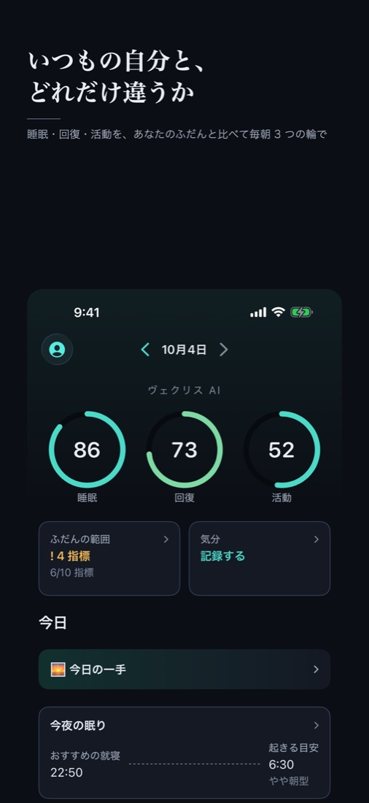
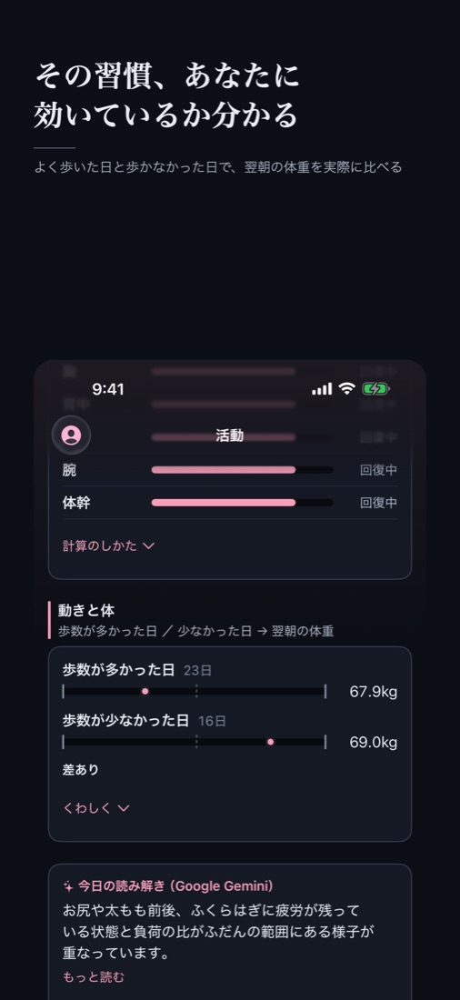

Apple Watch が毎日測っているのに、ほとんど見られていない数字があります。ヴェクリスは、それをあなた自身のふだんと比べて、毎朝、今日の調子をひとつの点数と、睡眠・回復・活動の 3 つのリングで示します。
iPhone 向け・日本の App Store のみ。心拍変動などは Apple Watch の記録を使います。

睡眠時間・深い睡眠・心拍変動・安静時心拍・呼吸数・歩数。それぞれに「あなたのふだんの範囲」の帯を引き、今日の値がどこにあるかを示します。世間の目安ではなく、あなた自身の過去の記録が基準です。

歩数と翌朝の体重、眠りと翌日の元気さ、習慣をやった日とやらなかった日。あなたの記録どうしを実際に比べ、たまたまの差は拾いません。
記録は iPhone の中にあります。ヘルスケアから読み込んだデータを、広告に使うことは一切ありません。外部の AI（Google の Gemini）に送るかはあなたが選び、選ばなければ外部の AI へは何も送りません。詳しくはプライバシーポリシーをご覧ください。
本アプリは医療機器ではなく、病気の診断・治療を目的としたものではありません。表示される値は、あなた自身の過去の記録から算出した推定値です。体調の判断や受診については、医師にご相談ください。